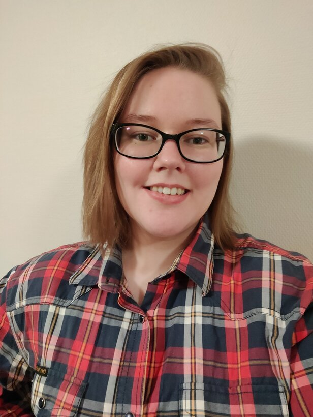

Educational path:
After graduating upper secondary school (Kuopion Lyseo) in spring 2018 I got accepted into Savonia University of Applied Sciences right away. My title would soon be Bachelor of Social and Health Care with degree programme in Biomedical Laboratory Science. However due to time management issues with writing my thesis and working full day, I couldn't graduate in time and ended up graduating in spring 2022. 6 months later than scheduled at the age of 22.
When I had been working on a laboratory field for 3 whole years, I had come to a conclution that I wanted more from my career and that I had other qualities which I would like to get to use. Summa summarum, in winter 2023 I ended up applying to Haaga-Helia University of Applied Scienses as a warm-up for joint application to higher education in spring. Despite all the odds, I got accepted in the winter and by the time of January 2024 I had moved 300km away to study Business Information Technology.